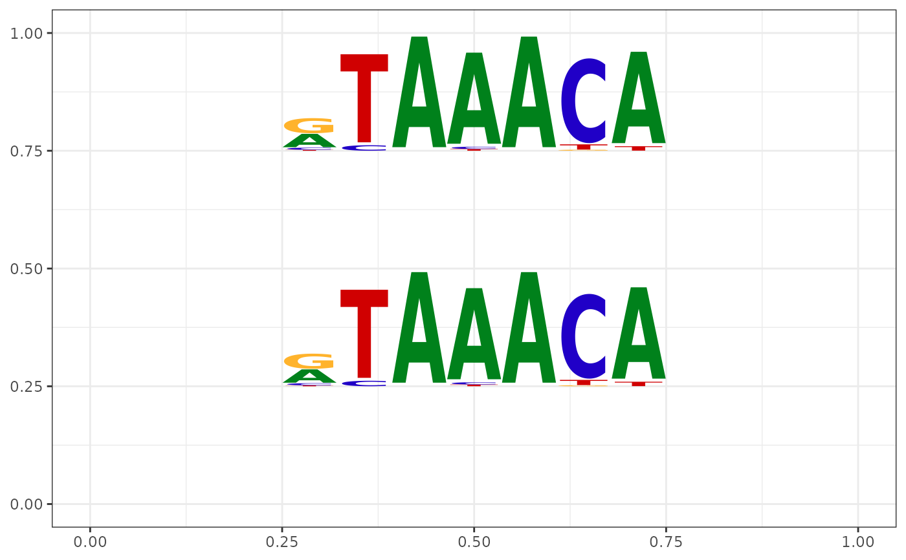

GeomMotif.RdGeomMotif object is a ggproto object.
GeomMotifThe format is: Classes 'GeoMotif', 'Geom', 'ggproto', 'gg' <ggproto object: Class GeoMotif, Geom, gg> aesthetics: function default_aes: uneval draw_group: function draw_key: function draw_layer: function draw_panel: function extra_params: na.rm handle_na: function non_missing_aes: optional_aes: parameters: function required_aes: xmin ymin xmax ymax motif setup_data: function use_defaults: function super: <ggproto object: Class Geom, gg>
geom_motif
pcm <- read.table(file.path(find.package("motifStack"),
"extdata", "bin_SOLEXA.pcm"))
pcm <- pcm[,3:ncol(pcm)]
rownames(pcm) <- c("A","C","G","T")
motif <- new("pcm", mat=as.matrix(pcm), name="bin_SOLEXA")
df <- data.frame(xmin=c(.25, .25), ymin=c(.25, .75), xmax=c(.75, .75), ymax=c(.5, 1))
df$motif <- list(pcm2pfm(motif), pcm2pfm(motif))
library(ggplot2)
ggplot(df, aes(xmin=xmin, ymin=ymin, xmax=xmax, ymax=ymax, motif=motif)) +
geom_motif() + theme_bw() + ylim(0, 1) + xlim(0, 1)
